第十六章资金管理和交易策略
引言
前面各章讲的，是我们在进行商品期货市场的预测和交易时，所采用的各种主要的技术方法。现在是最后一章了，为了完成对交易过程的研究，我们要在市场预测的基础上，添上交易策略(或时机抉择)这个关键因素，以及另一个常常为人忽略的方面——资金管理。三个要素，缺一不可，否则，交易就做不成。
我们把各种技术方法都集中起来，开列了一份清单，以备朋友们一睹全豹。相信在朋友们学习综合使用所有技术信息的初期，这张单子会有所帮助。我们还要讨论一下，到底应该不应该把技术分析与基本分析协调起来。如果这一点能够做到的话，当然对技术分析者和基本分析者都有好处，那么我们要看看应当怎样着手。最后，我们将就职业技术分析工作的地位和它的前途，谈一点泛泛的体会。
成功的商品期货交易具有三个要素
在任何成功的期货交易模式中，我们都必须考虑以下三个方面的重要因素：价格预测、时机抉择和资金管理。
l.价格预测指我们所预期的未来市场的趋势方向。在市场决策过程中，这是极关键的第一个步骤。通过预测，交易者决定到底是看涨，还是看跌，从而回答了我们的基本问题：我们应该以多头一边入市，还是以空头一边入市。如果价格预测是错误的，那么以下的一切工作均不能奏效。
2.交易策咯，或者说时机抉择，确定具体的入市和出市点。在期货交易中，时机抉择也是极为关键的。因为这个行业具有较低的保证金要求(高杠杆率)的特点，所以我们没有多大的回旋余地来挽回错误。尽管我们已经正确地判断出了市场的方向，但是如果把入市时机选择错了，那么依然可能蒙受损失。就其本质来看，时机抉择间题几乎完全是技术性的。因此，即使交易者是基础分析型的，在确定具体的入市、出市点这一时刻，他仍然必须借助于技术工具.
3.资金管理是指资金的配里问题。其中包括投资组合的设计，多样化的安排，在各个市场上应分配多少资金去投资或冒险，止损指令的用法，报偿——风险比的权衡，在经历了成功阶段或挫折阶段之后分别采取何种措施，以及选择保守稳健的交易方式还是大胆积极的方式等等方面。
可以用最简洁的语言把上述三要素归纳为：价格预测告诉交易者怎么做(买进还是卖出)，时机决择帮助他决定何时做，而资金管理则确定用多少钱做这笔交易。关于价格预测的间题，前面各章已有论述了。我们这里主要处理后两个方面。我们首先谈资金管理，因为在我们制定恰当的交易策略时，也必须把这个问题考虑进去.
资金管理
我曾在一家大型经纪公司的研究部门供职多年。离开它以后，我不可避免地转向了资金管理这一行。马上我就发现，在替别人谋划交易对策与亲自实践这些方案之间，存在着巨大的差别。令我意外的是，在这场工作转换中，最困难之处并不在于市场策略这一方面。我分析市场以及确定入市、出市点的方式前后并没有太大不同。真正的变化是我对资金管理的重要性的体验。我很惊诧，象资金帐户的大小、投资组合的搭配、以及在每笔交易中的金额配置等等诸如此类的间题，竟然都能影响到最终的交易成绩。
毋庸讳言，我坚定地信奉资金管理的重要意义。在我们这个行当，到处都是顾问公司、咨询服务，喋喋不休地指点客户买卖什么对象、何时去买卖等等，但是几乎没人告诉我们，在每笔交易中，应当注入多少资本。
有的交易者认为、在交易模式中，资金管理是最重要的部分，甚至比交易方法本身还要关健。我想，我可能还没有走得那么远，但是我相信，如果要长久地立于不败之地、就少不得它。资金管理所解决的问题，事关我们在期货市场的生死存亡。它告诉交易者如何掌握好自己的钱财。作为成功的交易者，谁笑到最后，谁就笑得最好。资金管理恰恰增加了交易者生存下去的机会。
一些普遍性的资金管理要领
我们必须承认，关于投资组合的管理间题可以弄得极为复杂，乃至于必须借助复杂的统计学方法才能说得清楚。我们这里只打算在相对简单的水平上讨论这个问题。以下我们罗列了一些普遍性的要领，对朋友们进行资金分配，以及决定每笔交易应注入的资金蚤等工作可能有所帮助。
1.总投资额必须限喇在全部资木的50%以内。余额可以投入短期政府债券。这就是说，在任何时候，交易者投入市场的资金都不应该超过其总资本的一半。剩下的一半是储备，用来保证在交易不顺手的时候或临时支用时有备而无患。比如说，如果帐户的总金额是100，000美元，那么其中只有50，000可以动用，投人交易中。
2.在任何单个的市场上所投入的总资金必须限制在总资本的10%到15%以内。因此，对于一个100，000美元的帐户来说，在任何单独的市场上，最多只能投入10，000到15，000美元作为保证金存款。这一措施可以防止交易商在一个市场上注入过多的本金，从而避免在“一棵树上吊死”的危险。
3.在任何单个市场上的最大总亏损金额必须限制在总资本的5%以内。这个5%是指交易商在交易失败的情况下，将承受的最大亏损。在我们决定应该做多少张合约的交易，以及应该把止损指令设置在多远以外时，这一点是我们极为重要的出发点。因此，对于100，000美元的帐户来说，可以在单个市场上冒险的资金不超过5,000美元。
4.在任何一个市场群类上所投入的保证金总额必须限制在总资本的20%—25%:这一条禁忌的目的，是防止交易商在某一类市场中陷入过多的本金。同一群类的市场，往往步调一致。例如，金市和银市是贵金属市场群类中的两个成员，它们通常处于一致的趋势下。如果我们把全部资金头寸注入同一群类的各个市场，就违背了多样化的风险分散原则。因此，我们应当控制投入同一商品群类的资金总额。
上述要领在期货行业中是相当通行的，不过我们也可以对之加以修正，以适应各个交易商的具体需要。有些交易商更大胆进取，往往持有较大的头寸。也有的交易商较为保守稳健。这里的重要用心就在于，我们必须采取适当的多样化的投资形式，未雨绸缪，防备亏损阶段的降临，以保护宝贵的资本。
决定头寸的大小
一旦交易者打定主意在某市场开立头寸，并且选准了入市时机，下面就该决定买卖多少张合约了。我们这里采用l0%的规定，即把总资本(如100，000美元)乘以100，就得出在每笔交易中可以注入的金额。在上例中100，000美元的10%是10，000美元。我们假定每张黄金合约的保证金要求为2，500美元，那么10，000美元除以2，500美元得4,即交易商可以持有四张黄金合约的头寸。如果每张长期国债合约的保证金是5，000美元.，那么我们只能持有2张长期国债合约。如果每张S&P500合约的保证金是6000美元，那么我们只能持有一张合约。在这种情况下，或者我们必须权衡一下，看看该不该持有2张合约(那就占到总资本的12%了)。请朋友们记住，上述几条不过是些要领，在有些倩况下，我们需要做一定程度的变通。这里也一样，最重要之处是，不要在哪个单独的市场或市场群类中卷入太深，以免接二连三地吃亏赔本，招致灭顶之灾。
分散投资与集中投资
虽然分散投资是限制风险的一个办法，但也可能分散得过了头。如果交易商在同一时刻把交易资金散布于太多市场的话，那么其中为数不多的几笔盈利，就会被大量的亏损交易冲抵掉。这里头也有个一半对一半的机会问题，因此我们必须找到一个合适的平衡点。有些成功的交易者把他们的资金集中于少数几个市场上。只要这些市场在当时处于趋势良好的状态，那就大功告成。在过分分散和过分集中这两个极端之间，我们两头为难，偏偏又没有绝对牢靠的解决办法。依我的经验来看，同时在四到六个不相干的市场上持有头寸，或许是一条中庸之道。关健的一点是“不相干”。我们所选择的市场之间的相关性越小，则越能取得分散投资的功效。如果我们只是同时在四种外汇市场上持有多头头寸，那么，算不得是优越的分散投资。
设置保护性止损指令
我向朋友们强烈地呼吁，一定要采取保护性止损措施。不过止损指令的设置着实是一门艺术。交易者必须把价格图表上的技术性因素，与资金管理方面的要求进行综合的研究。这一点，在本章后面的“交易策略”部分，我们再细谈。交易者应当考虑市场的波动性。市场的波动性越大，那么，止损指令就应当比较远。无独有偶，这里也有个机会间题。一方面，交易者希望止损指令充分地接近，这样，即使交易失败，亏损也会尽可能地少。然而另一方面，如果止损指令过于接近，那么很可能当市场发生短暂的摇摆(或称“噪音")时，引发不必要的平仓止损的行为。总之，止损指令过远，虽然能够避开噪音干扰，但最终损失较大。关健还是要走中庸之道。
报偿一风险比
最成功的交易商也只能在40%的交易中获利。事实就是如此。大多数交易以亏损而告终。那么，既然交易者在多数情况下都赔钱，他们最终又怎么能盈利呢?因为期货交易只要求如此小额的保证金，所以，哪怕市场朝不利的方向只变化一点点，我们也不得不忍痛平仓止损。于是，在交易者真正捕捉到他心目中的市场运动之前，或许不得不先进行几番尝试。
假定某交易者预期黄金价格即将从300美元涨到500美元，于是他在300美元的价位买入了一张合约，并把冒险金额限定为10美元。随后市场跌到了290美元，这笔交易就被止损平仓了。然后在295美元的时候，他又买入一张合约，接着又一次地蒙受了10美元的小额损失。最后，他在305美元第三次买进，这一回终于如愿以偿，价格涨到了500美元，结果获利195美元。他总共做了三笔交易。头两笔有小额亏损，总共为20美元。第三笔盈利195美元。尽管在三笔中只有一笔有利润，但是最终结果仍然是赢余175美元(195-20)。这就相当于17，500美元的实际利润(175美元x 100美元)。
这样我们就涉及到了报偿一风险比的间题。因为大多数的交易是赤字，所以我们唯一的希望就是，确保获利交易的盈利额大于亏报交易的损失额。为了达到这个目的，大部分交易者都要考虑报偿——风险比。对每笔计划中的交易，我们都要确定其利润目标(报偿)，以及在万一失败的情况下的可能亏损的金额（风险）。然后，我们把利润目标与潜在亏损加以权衡，得出报偿——风险比。报偿——风险比有一个通用的标准，3比l。在考虑一笔交易时，其获利的潜力至少必须3倍于可能的亏损，我们才能够付诸实施。在前面的黄金交易的例子里，假定其预测风险为10美元，那么其利润潜力至少达到30美元才行。
有些人在报偿一风险比的计算中，加入了一个可能性因子。他们认为，仅仅预估利润和亏损的目标是不够的。因此，在潜在的利润和亏损额上，必须分别乘以上述利润和亏损出现的可能性(以百分数表示)。从统计学角度来看，这种做法是颇有道理的，但是麻烦之处是，我们必须假定各个交易商能够事前定量化地评估获利或亏损的可能性。
“让利润充分增长，把亏损限于小额。”在期货交易中，这是老生常谈了，我们刚刚讨论的问题与之很有关系。在商品期货中，如果我们咬定长期趋势，就可以实现巨额的利润。因为就每年来说，我们仅有少数的交易可致巨利，所以机会难得，必须尽量扩大战果。“让利润充分增长”，一语道破天机。而“把亏损限于小额”就象同一块硬币的另一面。不过，如果朋友们知道很多交易者的所作所为与这句话恰恰相反，怕会惊愕不已吧。
复合头寸交易:跟势头寸与交易头寸
说起来，“让利润充分增长”似乎颇容易。只要我们有慧眼捕捉到某市场趋势的开端，就能在相对短的时间内，获取巨额利润。然而，迟早有一天，趋势突然地停滞不前了。此时，在摆动指数上显示出超买状态，在价格图上也面临着一些重要的阻挡水平。怎么办?虽然我们相信市场尚有很大的上涨余地，但是又担心价格下跌，丧失帐面利润。现在，是平仓获利呢?还是安之若素，准备忍过可能出现的调整呢?
有一个办法可以解决这个间题：我们始终采用复合头寸来进行交易。所谓复合头寸，是指我们把交易的单位分成交易头寸和跟势头寸两部分。跟势头寸部分图谋长期的有利之处。对于它们，我们设置较远的止损指令，为市场的巩固或调整留有充分的余地。从长期角度看，这些头寸能够带来最大的利润一。
在我们的投资组合中，特地留出交易头寸部分来从事频繁地出市入市的短线交易。如果市场已经达到第一个目标，接近了某个阻挡区，同时摆动指数也显示出超买状态，那么，我们就可以针对交易头寸部分地平仓获利，或者安排较接近的止损指令。其目的是要锁定或确保利润。如果之后趋势又恢复了，那么我们就把已平仓的头寸重新补回来。因此，我们最好在开始交易时，避免只做一张合约或一个单位头寸的情 况。通过多单位头寸的交易，我们就拥有了更大的灵活性，从而可能提高总的交易成绩。
资金管理：保守型与大胆型交易方式
《商品期货游戏》对资金管理这个间题有一番精彩的议论，其作者是塔韦尔斯、哈洛和斯通。在这本书的“资金管理”一章中，有一段语重心长的陈述，把保守的交易风格推祟为最终取胜之道。
……甲交易者成功的把握较大，但是其交易作风较为大胆；而乙交易者成功的把握较小，但是他能奉行保宁的交易原则。那么，从长期看，实际上乙交易者取胜的机会可能比甲更大(《商品期货游戏》，理查德.J 塔斯韦尔斯，查尔斯·V·哈洛，赫伯特·L·斯通，麦格劳一希尔版，1977年，第263页)。
根据我个人的体验，上面的引文是有道理的，从长期来看，保守的交易作风最可取。急于发财的交易者往往采取大胆积极的交易方式。那么，只要市场运动的方向不出岔子，其利润的确是可观的。但是，一旦事情不再一帆风顺，其后果通常就是毁灭性的了。我宁愿成绩平稳，不要有大起大落。每个交易者都得在保守与大胆两个极端之间选择自己的风格。不过朋友们在下决心之前，应该好好地读一读我们上面提
到的那一章。
在成功或失败阶段之后做什么
关于资金管理，这里有几个棘手的问题，我们得费费脑筋。交易者在经历了一轮失败或成功之后，应该做什么?假定你的交易本金赔掉了50%，你应当改变交易风格吗?如果你已经损失了一半本钱，那么为了挣回原来的资金金额，首先你就不得不从剩下的一半中挣出它的一倍来。你是更加细致地选择交易机会呢，还是选择保证金要求较低的市场呢，还是保持一贯、采取一如继往的交易方式呢?如果这时你才变得保守起来的话，就将很难把损失的资金再点回来了。
另一方面，如果交易者刚刚喜获丰收，虽然感觉挺滋润，却也有个两难问题。假定你已经赚足了原有本金的一倍，那么如何利用这些盈利呢?看起来，似乎显而易见，为了从资金运用中取得最大的收益，我们应该利用盈利来把交易头寸扩大一倍。然而，将来免不了会发生亏损的阶段，如果我们这么办了，结果可能不只是贴掉刚挣回的那一半利润，而是要连本带利地全部搭进去。所以上面两个问题的答案并不象乍看起来那么简单明白。
每个交易商的交易成绩记录都是由一系列峰和谷组成的，与价格图倒是极相似。如果从总体上看交易者是盈利的，那么他的资金图线就应当是上升的。在刚刚获利之后马上就扩大注人市场的本金，这种时机是最糟糕的。这一点恰恰就象在上升趋势中，当市场处于超买状态时买入一样。更明智的做法(这与人类的本性有点不符)是，在资本金稍有亏损的时候，便开始增加投入。这么做，增大了重头投入处在资本金的低谷而不是在资本金的顶峰的机会。
资金管理的问题虽然棘手却很关键
以上，我们只是在期货交易的资金管理这个重要的方面沾了一点边。我这里的主要意图，是想告诉朋友们在制订交易计划时资金管理的重要性，建议几点普遍性的要领，提出一些容易被忽略的问题。好在只要我们能够提出这些问题，也就有希望随之获得其答案。我打算再从前面提到的那本书中引用一段话，来结束我们相对简要的讨论。
要是朋友们现在终于认识到，在资金管理的问题上，充满了令人进退两难和矛质重重的困境，因而值得我们仔细地推敲的话，那么你已经算是初窥门径了。......这些关乎生存的基木法则，大部分寓含在资金管理的领城里。但是，很少有交易者对这个方面特别有兴致。大家的注意力往往集中于选择交易机会这一方面，这反而成了大多数人的基本兴趣之所在(塔韦尔斯，哈落和斯通著，第271一272页)。
基金管理行业
在期货行业，“资金管理”这个术语另外还指职业化的客户资金管理。从广义上说，“资金管理”(或基金管理)系私人或公众基金的职业交易人员(商品交易顾问和商品基金经理)管理其集聚资金的行为。由于越来越多的私人投资者接受了与共同基金行业类似的集聚资金的方式，把他们的资金托付给上述人员经营，丙此，十多年来，在期货业中这类基金一直在稳步增长。我们这里之所以要文代.I资伞管理”的这一层意思，意在防止混淆。不过，这方面的间题，并不是贵们的主要兴趣。
参考资料
尽管在各种期货研究资料中，关于资金管理的方面均未受到足够的重视，但也还有几本书对此有所论述。《商品市场资金管理》(弗雷德·格姆著，威利版，1983年)一书，采用统计学方法，对资金管理的各项原则进行了透彻的研究。关于帐户管理行业的资金管理间题，在《投资者期货资金管理指南》中有精妙的深入介绍。·’咋者是莫顿·S·巴拉兹(期货出版集团版，1984年)。他是《管理帐户报告》的编者。这份市场通讯主要跟踪各家基金的经理的业绩，定期报告他们公开发表的业绩资料。
交易策略
交易商在完成了市场分析之后，就应当清楚到底是该买进，还是该卖出。下一步，称们根据资金管理方面的考虑，确定汪入资金的规模。最后，我们进入市场，实际购进或抛出期货合约。在期货交易中，由于入市点和出市点的时机抉择必须极为精确，因此，最后这一步在上述过程中可能是最困难的，关于如何入市、在什么点位入市的问题，我们必须在通盘考虑各项技术性因家、资金管理的要求、以及我们所采用的交易指令的类型的基础上，才能作出最后决定。下面，我们依次对各个方面加以探讨。
利用技术分析抉择时机
谈起利用技术分析来选择交易机会，其实并不新鲜，这是我们前面各章中的老话题了，唯一的区别是，出、入市时机抉择问题是针对很短暂的时期而言的。我们这里所关心的时间范围，是以天、小时、乃至分钟来计算的，这与逐周、逐月的筹划正好相对立。但是我们所采用的技术方法依然是一致的。在此，我们不打算再逐一地介绍各种技术方法了。
我们的讨论仅限于一些一般性的概念。
1.关于突破信号的策略
2.趋势线的突破
3.支撑和阻挡水平的利用
4.百分比回撤的利用
5.价格跳空的利用
关于突破信号的策略:预先还是伺后?
关于突破信号，交易者永远都得面对一个左右为难的问题：究竟在突破发生之前预先入市呢?还是正当突破发生的时候当场入市呢?或者还是等突破发生后市场反扑或反弹时伺后入市呢?三种做法各有各的门道，而且我们也有综合采用三种方式的办法。如果交易者可以买卖数张合约，那么不妨每样各做一个单位。假定我们预期市场将发生向上突破。采取预先方式的好处就在于，如果突破果真如愿发生了，那么我们的头寸就具备有利的(较低的)价位。但是在另一方面，交易失败的风险也相应地较大。如果我们正当突破发生时才入市，则成功的把握较大，但是代价是，入市的价位也不利(较高)。如果我们等市场在突破后出现反扑时，再伺后入市，那么只要果真能够发生反扑，这就不失为合理的折衷方案。可惜的是，许多势头凶猛的市场(通常也是最有利可图的)，并不给那些耐心的交易商第二个机会。因此，采取伺后方式的风险小，但是错过重要的入市机会的可能性较大。
这也是一个很好的例子，说明使用复合头寸的办法大大地化减了我们左右为难的程度。在突破前“预先”入市时，交易者不妨开立一点小头寸；然后，在突破时，再添一点头寸；最后，等突破后市场调整性地跌回时，再追加一点头寸。但是，如果交易者只有一点小头寸，那么他将难于摆布。在很大程度上，他的决定取决于他愿意在这笔交易上冒多少风险，以及他愿意采取什么样交易风格。最保守的方式可能是在市场突破后出现反扑时“伺后买进”。碰上这种情况，完全要看交易者本人如何决策了。
趋势线的突破
这是一种最有价值的早期入市或出市的信号。如果交易商正在寻求趋势变化的技术信号，以开立新头寸，或者正找机会平仓了结原有头寸的话，那么，紧凑趋势线的突破常常构成绝妙的下手信号。当然，我们始终也必须考虑其它技术信号。另外，在趋势线起支撑或阻挡作用的时候，也可以用作入市点。在主要的上升趋势线的上侧买入，或者在主要的下降趋势线的下侧卖出，均不失为有效的时机抉择的对策。
支撑和阻挡水平的利用
在选择出、入市点这一方面，支撑和阻挡水平是最行之有效的图表工具。当阻挡被击破时，可能构成开立新的多头的信号。而这个新头寸的保护性止损指令就可以设置在最近的支撑点的下方。我们甚至还可以更接近地设置止损指令，把它安排在实际的突破点之下，因为这个水平现在应该起到支撑作用了。如果在下降趋势中市场上冲至阻挡水平，或者在上升趋势中价格下跌到支撑水平，那么我们均可以据此开立新头寸，或者把已有帐面利润的原有头寸加以扩大。另外，在我们设置止损指令的时候，支撑和阻挡水平也是最有参考价值的。
百分比回撤的利用
在上升趋势中，向下的调整常常回撤到前面的上涨进程40%-60%的位置。我们可以利用这一点来开立新的多头头寸。因为我们现在主要谈的是时机抉择间题，所以我们把百分比回撤也应用于非常短期的变化。比如说，在牛市突破之后的40%回撤，或许正是绝妙的买入点。而在下降趋势中40%到60%的向上反弹通常提供了优越的抛空机会。同时，在日内价格图上，我们也可以应用百分比回撤的概念。
价格跳空的利用
我们还可以利用线图上出现的价格跳空来有效地抉择买卖时机。例如，在上升运动之后，其下方的价格跳空通常起到支撑作用。当价格跌回价格跳空的上边缘、或者回到价格跳空之内的时候，我们买入。然后，我们把止损指令放置在跳空之下。在下跌运作之后，当市场反弹到上面价格跳空的下边缘、或进入到跳空之内的时候，我们卖出。然后，再把其止损指令安排在跳空的上方。
综合各项技术概念
利用各项技术概念的最有效的办法，是把它们综合起来。请记住，我们正在讨论的是时机抉择问题，关于买或者卖的基本决定早已经确定了。此处我们所做的一切，就是要对入市和出市点进行细致的调整。如果我们采纳了买入信号，那么，就会力求以最低的价格入市。假定价格跌回了40%-60%的买进区域，此处又存在一个显著的支撑水平，或者一个潜在的支撑性价格跳空，那就妙不可言。进一步，如果附近就有一条重要的上升趋势线，那就更好。
那么，所有这一切因素综合在一起，就能增加交易时机抉择的有效性。我们的主意是，在上升趋势中，在支撑区附近买进，但是如果该支被击溃，就尽快平仓出市。而在下降趋势中，我们尽可能在接近阻挡区
之处卖出，但是如果该阻挡被冲破，也尽快平仓出市。在上升趋势的向下调整中，如果沿着调整阶段中的高点所连成的紧凑下降趋势线被向上突破了，也可用作买入信号。而在下降趋势的向上调整中，如果调整阶段的紧凑趋势线被向下突破了，也可能是做空头的机会。
把各项技术因素与资金管理结合起来
在我们考虑设置止损指令的时候，除了利用图表的点位外，还应该适当地兼顾资金管理的几条要领。让我们回过头再看看先前的黄金市场的例子。假定交易者决定在300美元附近买进黄金，他的帐户金额为
100，000美元，我们采取其中的10%作为每笔交易的最大注入限额。那么在这笔交易中，他只可动用10，000美元。因为保证金要求为2500美元，所以他只能买进4张合约。而最大的风险限额为5%，即5，000美元。因此，他所设置的止损指令的价位必须满足如下条件：万一交易失手、止损指令被执行了，其亏损总额不能超过5000美元。
在我们具体设盆止损价位时，必须结合考虑资金管理的各项限额，以及图表上的支撑或阻挡水平的位置。假定买入点是301美元。而图表上显示的最接近的可靠支撑水平在以下11美元处，即290美元。如果我们把止损指令设置在289美元(290美元支撑价位的下方)，那么每张合约的最终的风险金额为1200美元（$12x$100） 4张合约的总的风险额为4800美元（4X$1200），刚好处于5000美元的限额以内，符合资金管理的要领。
如果最接近的支撑水平在15美元以下，那么每张合约的风险额将达到1600美元。为了保证处于5，000元的限额以内，现在只可以买进3张合约(3x$1600)，而不是原先的4张了。所以，如果能够找出较接近的支撑水平，那么选择起来就轻松得多了。倘若止损指令只需要放置在5美元以下(每张合约只要冒500美元的风险)，那么即使我们买入多达10张合约，也不会超过5000美元的风险限额。当然，买进10张合约是不符合10%的规定的，但这里就有机会做一点变通。
止损指令较接近的话，就允许我们持有较大的头寸。而止损指令较远，则可能限制我们的头寸规模。有些交易者在决定止损指令的时候，完全是从资金管理的因素出发的。但是，有一点极端重要。对于空头头寸，其止损保护指令应当设置于有效的阻挡点位的上侧；而对于多头头寸，其止损保护指令应当设置于有效的支撑点位的下侧。在我们探求具有一定有效性的、较接近的支撑或阻挡水平的时候，日内图表颇擅胜场。
交易指令的类型
正确地选择交易指令的类型，是交易策略中的必要组成部分。不过，这里要讨论的，只限于一些较为常见的指令类型：
1.市价指令，指示经纪人径直按照当前的市场价格买入或卖出期货合约。在市场急速动作的情况下，或者在交易商要求确保能够开立头寸的情况下，通常最好采用此类指令，以免贻失良机，错过潜力大的市场运动。
2.限价指令，明确地指出交易者愿意接收的交易价格。买入限价指令一般设置在当前市场价格之下，表示交易者在买进时愿意支付的最高价格。而卖出限价指令一般放置在当前市场价格之上，表示交易者在卖出时愿意接受的最低价格。本指令属于伺机成交的指令类型。举例来说，如果买方在看涨突破发生后，试图乘市场随后向下反扑到支撑水平附近时再入市，则可以采用此类指令。
3.止损指令，既可以用来开立新头寸，也可以用来限制已有头寸的亏损，或者保护已有头寸的帐面利润。止损指令指明了有关交易指令的执行价格。买入止损指令一般置于市场的上方，而卖出止损指令则设在市场的下方(这一点与限价指令正好相反)。只要市场触及止损指令的水平，该指令就转化为市价指令，经纪人必须立即以能够到手的最好价格执行。在多头头寸的情况下，其卖出保护指令设置在市场下方，以限制亏损。如果后来价格上涨了，我们也可以水涨船高，提高止损指令的水平以保护帐面利润(这就是所谓跟踪止损)。我们也可以预先在阻挡水平上方安排好止损指令，从而当向上突破发生的时候，就能够及时地开立多头头寸了。同样道理，卖出止损指令也可以设立在支撑水平之下，等向下突破发生时，开立新的空头头寸。因为止损指令后来转化为市价指令了，所以其实际的执行价格或许比止损指令的原定水平要差一些，特别是当市场激烈变化时尤其如此。
4.止损限价指令是止损指令和限价指令的复合形式。本类指令同时明确了止损价格和限价价格两个水平。一旦市场触及止损价格，则本指令转化为限价指令。当交易者既打算在突破发生时入市买卖，又力图控制交易价格的时候，可以采用这一类指令。
5.触市指令(M.I.T.)，与限价指令类似，但区别在于，一旦市场触及本指令的价格水平，它就转化为市价指令了，买入触市指令也象买入限价指令那样，把水平设置在市场下方。当所限制的水平被市场触及后，经纪人必须立即入市交易。同限价指令比较，本类指令具有明显的优越性。虽然买入限价指令也位于市场下方，但是即使市场触及了它的水平，也不能确保该指令被执行。这里正是M.I.T.指令最有价值的地方。如果交易商既希望乘跌低价买入，又不想在万一市场只是对指令水平一触及返的情况下丧失入市良机的话，就可以选用本类指令。在下降趋势中，我们把M.I.T.指令设置在市场上方。
上述各种指令分别适用于不同的场合。每一类都是既有长处，也有短处。市价指令能够确保头寸的建立，但其代价是往往“尾追”市场。限价指令能够提供易于控制的好价格，但是我们冒着贻误良机的风险。对于止损限价指令，当市场在指令水平处发生价格跳空时，也有同样的风险。另外，如果我们采用买入或卖出止损指令来开立新头寸的话，也免不了发生执行价格恶劣的情况。触市指令虽然出奇地有效用，但是在有些交易所是不允许使用的。我们应当通晓上面各种指令，并明了其优缺点。在我们的交易方案中，每种指令均应拥有一席之地。我们还必须明了各间期货交易所允许交易者采用的指令类型。
从日间图表到日内图表
因为时机抉择问题关心的是短期的市场行为，所以日内价格图表特别有用处。在我们从事当日交易时，日内价格图表也是不可或缺的。不过，这一点不是这里的中心话题。我们这里主要是要讲清楚，在我们作出了是不是应当入市或出市的基本决定后，如何利用日内价格图表来帮助我们抉择具体的买入或卖出时机。
有一点值得我们反复地说明。在整个交易过程中，我们必须从长期的研究着手，然后逐步过渡到较短的时间范围。我们的分析是以对连续月线图和周线图的长期透视开始的。接下来，我们考察日间图表，这是做出实际交易决定的基础。最后，我们研究日内价格图表，以获得进一步的精确度。长期图表是对市场的鸟瞰。而日内价格图表是对市场活动的显微观察。朋友们将看到，我们过去所讨论的各项技术原理，在这类极灵敏的图表中均有清晰的体现.
下面我们以研究整S&P500期货合约的过程为例。图16.1是一张日线图，其中共展示了90天的价格变化(这些图表均引自ADP康川视觉系统)。在图表上方，罗列了6种图表形式，分别对应着各种灵敏度级别，可供用户选择。我们就从日线图开头，然后逐步向较短的时域聚焦。
假定交易者已经研究过月线图和周线图，并且已从技术分析角度得出结论：价格将上涨。图16.1所示的日线图也显示价格趋势向上。那么，该交易者就对这个市场看涨，并打算建立多头头寸。从日线图上，我们可以识别潜在的支撑区域，从而计划买入点位。但是，如果我们希望得到更精确的结论，日线图就不够用了(在日线图上，我们也可以采用“突刺”方法，乘向下反弹的机会买入。我们稍后介绍)。请注意最后5天(一个星期)的价格变化(在图16.1中，我们给它们周围加了一个框子)。从图中可以看出，周一和周二价格稍有回撤，然后在周五涨出新高，不过这还不足以显示其中的变化细节。下面让我们再看看更灵敏的图16.2，它所显示的正是图16.1中框子里的5天的价格变化。在这张较灵敏的图上，每根价格线段各代表1分钟内的价格变化(1分钟线图)。
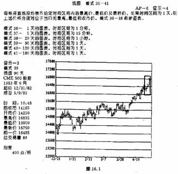
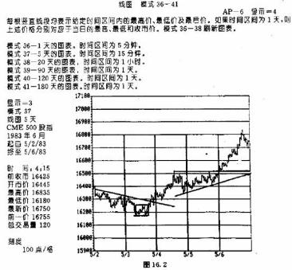
请注意，这里的情况详细得多了，在本图中，那5天价格变化具备了全新的面目。过去我们看不到的支撑和阻挡水平现在原形毕露，价格形态也像模像样，趋势线也能加得上了。从中我们可以看清周一和周二的抛售，周二的双重底，周四的看涨上升三角形，以及周五的新高点。由此看来，我们的买入既可以安排在周二向上突破的时候，也可以在周四的巩固形态中，或者在周五的第二个向上突破的时候。我们不妨再细致地探究探究。周二是调整结束的日子，所以它是本周最关健的一天，它本可以构成开立新多头的最好时机。下面我们就来好好看看这一天。
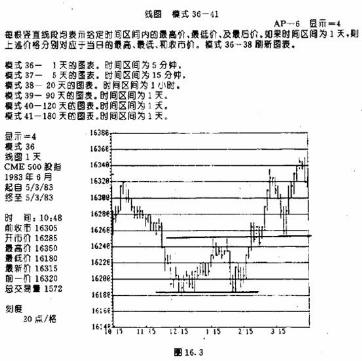
在图16.3中，我们只表示了周二的价格变化。其中每根价格线段均代表5分钟内的价格变化(五分钟线图)。请看图表下面所标出的时间。请朋友们特别注意，在本图上，标准的图表分析原则体现得何等完美。双重底的完成，在下午2:15左右，是以市场向上突破162.50的价位为标志的。请注意，3:15左右的价格回撤大致是先前上冲的50%，而且刚好在突破点162.50上方打住——统统符合规范的图表分析理论。爱好艾略特波浪理论的朋友也可以看到，大约从12：15起到这一天收市为止，图上极清楚地显示出五浪结构的上涨形态。所有这一切信息本来均可以为交易者所用。当突破162.20的时候、当突破162.50的时候、或者当市场发生50%回撤再次跌回162.50支撑水平的时候，统统是买入的好机会。在当日交易结束时，我们本可以在162.50下方设置紧凑的止损保护指令的。
头一回见到这些日内图表的朋友，常常感到很惊讶，图表分析在如此短期的图表上竟有这样出色的表现。实际上，如果朋友们事先并不知道图16.2和16.3是日内价格图表的话，单纯从这些价格图线上是不会产生任何疑虑的。它们的外观与6个月的日线图或者6年的月线图比起来，毫无例外之处。而这一点对于我们的时机抉择问题来说，恰恰是个要害。在我们力图使入市点和出市点精确化的过程中，我们所使用的技术工具是完全一致的.其间唯一的特别之处在于，后来我们把这些工具应用于非常短期的价格变化了。
从图16.4到图16.7表示的都是与上图同样的价格内容，但是图线形式不同。图16.4所示的是周二价格变化的“价点图”。图16.5和16.6所示为“趋势线图”，是价点图中的各点的指数平滑曲线。图16.7是周二的日内点数图。由于日内点数图长于揭示潜藏的支撑和阻挡水平(见第十一章)，在我们进行短期的时机抉择时，它们是极为有用的图表工具。在场内交易商中间，日内点数图备受青睐。
在上述图例中，我们的研究仅限于标准的图表分析理论。实质上，本书中所讨论的每一种技术分析方法，包括移动平均线和各种摆动指数，均可以应用于日内图表。在应用移动平均线时，其时间跨度可以选定为价点数，或者是日内时间单位的倍数。比如。在后一种情况下，我们可选择每个5分钟时段的最后价格进行平均。有些较流行的摆动指数，如相对力度指数和随机指数，已经有了在日内图表下的翻版了。在第十五章详细介绍的Compu Tra软件中，也有各种日内形式的研。些更灵敏的技术分析程序称为日内分析(IDA)
邓尼根的突刺技术
所谓‘突刺”技术，是威廉，邓尼根在50年代早期创立的，这是一种利用日线图来寻求既存趋势发生小幅折返的入市时机的方法。其意图是乘市场发生反趋势方向的小规模反弹的机会买入。它最低要求，在
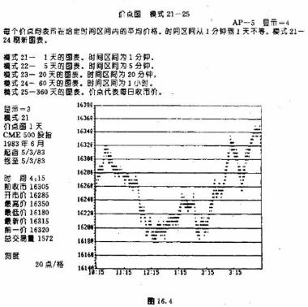
上升过程中至少有一个价格下跌的交易日。较理想的情况是有三个下跌日。所谓下跌日，意思是当日的最高价和最低价均分别低于前一天的对应价格。扩张日和收缩日都不算下跌日。假设在上升趋势中至少出现了一个下跌日，那么，如果次日的最高价至少高过下跌日的最高价一个基本价格单位，就构成了“突刺”买入信号。在这个多头头寸开立之后，其止损保护指令可以设里在入市当日最低价的下方。
上述是“突刺”技术最简单的形式，有些交易商对其中构成实际买、卖信号所需要的价格穿越幅度作了修改。在图16.1中，已经出现了一个强劲的上升趋势。最后这个星期的周一和周二均为下跌日(其中各日的最高价和最低价分别都低于前一日的对应价格)。“突刺”买入信号发生在周三，当价格向上穿越周二
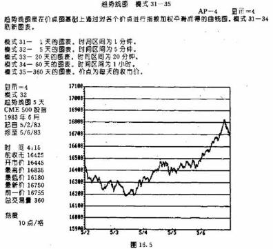
的最高价的时候。这种技术相对来说是简便的，我们可以依据它来进入具有强烈趋势的市场。在下降趋势中，道理一样，但方向相反。其中上涨日的最高价和最低价都必须分别高于前一日的对应数值。而卖出“突刺”信号发生在当市场向下跌破了前一日的最低价的时候。我们可以把相应的止损保护指令，设置在入市当日最高价的上方。
日内轴心价格点的利用
为了更早地入市，并且使止损保护指令的水平与入市水平更紧凑，有些交易商设法通过轴心价格点的方法来预期市场的收市价位。在这种技术中，包含了7种关键的价格水平和4个时间参数。这7个价格轴心点分别是，前一日的最高价、最低价和收市价，当日的开市价、最高价、最低价和收市价。4个时间参数都是当前交易日的。它们是，开市，开市后30分钟，正午(纽约时间12:30)以及收市前35分钟。
这些都是平均的时间概念。我们可以针对具体的市场进行调整。这种方法的意图是，当交易者觉得市场已经处于强弩之末或处于摇摇欲坠的顶部或底部状态时，可以采用上述轴心点作为时机抉择的工具。其中的买、卖信号，是以当日价格突破各个轴心点为标志的。当日，信号出现得越迟，则越强。下面举个买入信号的例子。如果当日的开市价高于前一天的收市价，但是低于前一天的最高价，则可以把买入止损指
令设置在前一天最高价的上方。如果这个买入止损指令得以执行，我们就把它的保护性卖出止损指令设立在当日最低价的下方。在收市前35分钟的时候，如果我们当日还未开立任何头寸，则在当日最高价上方设置买入止损指令，其保护性止损指令放在当日开市价下方。一般地，在开市后的头30分钟内，我们不采取行动。随着当日交易活动的进行，轴心价格点之间的距离会逐渐减小，而保护性止损指令的距离也就相应
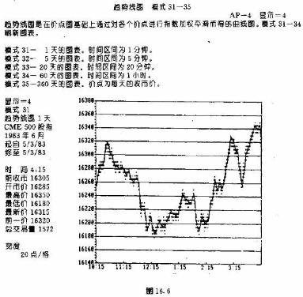
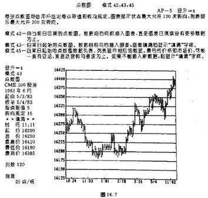
地缩短。作为买入信号，最后还有一个条件：当日的收市价格必须既高于前一日的收市价，又高过当日的开市价格。
关于轴心点方法的进一步的资料，朋友们可以从沃尔特·J，布雷塞特的一本40页的小册子中找到。书名是《入市和出市：如何与职业对手交易》(商品周期版，1976年)，在《霍尔周期分析者智囊》中，对此也有简要的介绍<霍尔市场周期版，1984年)。
资金管理要领和交易策略举要
以下，我们开出了一张清单，.其中列举了资金管理的要领和交易策
略较重要的方面。
1.顺应中等趋势的方向交易。
2.在上升趋势中，乘跌买入，在下降趋势中，逢涨卖出。
3.让利润充分增长，把亏损限于小额。
4.始终为头寸设置保护性止损指令，以限制亏损。
5.不要心血来潮地做交易，打有计划之战。
6.先制订好计划，然后贯彻到底。.
7.奉行资金管理的各项要领。
8.分散投资，但须注意，“过犹不及”。
9.报偿——风险比至少要达到3比1，方可动作。
10.当采取金字塔法增加头寸时，应遵循以下原则：
a.后来的每一层头寸必须小于前一层。
b.只能在盈利的头寸上加码。
c.不可以在亏损头寸上再增加头寸。
d.把保护性止损指令设置在盈亏平衡点。
11.绝不要追加保证金，别把活钱扔进死头寸里去。
12.为了防止出现追加保证金的要求，应确保至少拥有总的保证金要求的75%的净资金。
13.在平回盈利头寸前，优先平仓了结亏损的头寸。
14i除非是从事极短线的交易，否则总应当在市场之外，最好是在市场闭市期间，做好决策。
15.研究工作应由长期逐步过渡到短期。
16.利用日内图表找准入市、出市点。
17.在从事当日交易之前，先掌握隔日交易的技巧。
18.尽量别理会常识：不要对传播媒介的任何说法过于信以为真。
19.学会踏踏实实地当少数派。如果你对市场的判断正确，那么，大多数人的意见会与你相左。
20.技术分析这门技巧靠日积月累的学习和实践才能提高。永远保持谦逊的态度，不断地学习探索。
21.力求简明复杂的并不一定是优越的。
全书大会串一张清单
正如本书所证明，技术分析是由各个方面汇集而成的，其中每种方法都能为分析者增添一些对市场的新认识。技术分析就象是我们在七巧板游戏中拼出的精巧图案。每种技术工具都是大图案的一个小块。我自己的办法是，把各种各样的技术综合起来进行分析，多多益善。每种方法各有其擅长的一定的市场环境。关键是我们要弄清楚，针对当前的市场情况，什么样的工具最合适。这一点只能靠学问和经验了。
所有这些方面都在一定程度上相互重叠，相互补充。如果有哪一天朋友们能够看出它们的相互关系，并且能够从这些部分之中提炼出技术分析的整体，那么，这一天就是你配得上技术分析师这顶头衔的好日子。在下文中，我们开列了一张清单，目的是在朋友们学习初期，至少帮助大家触及到技术分析各方面的基础知识。不过，以后它还有另外的用场。这张清单算不上无所不包，但是其中的确搜罗了那些最值得我们了然于胸的重要方面。严谨的市场分析很少有轻而易举的时候。分析师必须不断地为未来的市场变化探求各种蛛丝马迹。而使得分析者下决心选择此方向或者彼方向的最后线索，常常是早已被大家抛诸脑后的不起眼的因素。分析者所考虑的因素越多，那么他获得正确结论的机会就越大。
技术分析清单
1.期货价格指数的方向如何?
2.本市场所属的期货市场群类的方向如何?
3.在其连续的周线图和月线图上，情况如何?
4.主要趋势、中等趋势、以及小趋势的方向，分别是上升、下降、还是横向伸展?
5.重要的支撑和阻挡水平在何处?
6.重要趋势线或管道线在何处?
7.交易量和持仓兴趣验证了价格变化吗?
8.33% 、50%、66%价格回撤位置在何处?
9.图上有无价格跳空?它们属于何种类型?
10.图上有无任何主要反转形态的迹向?
11.图上有无任何持续形态的迹向？
12.上述形态的价格目标在何处?
13.移动平均线指向什么方向?
14.摆动指数正处在超买或超卖状态吗?
15.在摆动指数图上有无相互背离现象?
16.相反意见数字是否显示市场处于极端状态?
17.艾略特波浪的形态如何?
18.有无明显的三浪结构或五浪结构?·
19.波纳奇回撤位置及其价格目标的位置在何处?
20.当前有无可能出现任何周期性的波峰或波谷?
21.市场是否显示出峰值右移或左移现象?
22.计算机趋势的方向如何：上升、下降、还是横向延伸?
23.点数图上的情况如何?
当朋友们得出了市场看涨或看跌的结论后，再搞清楚下列问题。
1.在今后一到三个月内，当前市场趋势会怎样演变?
2.我决定在本市场买入还是卖出?
3.交易合约的数量是多少?
4.在判断错误的情况下，我打算承受多大的风险?
5.我的利润目标在何处?
6.在何点入市?
7.采用何种指令类型?
8.我应当把保护性止损指令设置于何处?
即使你照着以上清单一一地执行，也并不能保证获得正确的结论。这份清单的目的仅仅是帮助朋友们正确地提出问题。而提出正确的间题是寻求正确答案的最可靠的方法。期货交易成功的诀窍是，知识、自律和忍耐。倘若你已经掌握了适当的知识，那么把自律和忍耐修炼成功的最佳途径就是勤学苦练，并制定好行动计划，最后，把计划付诸实践。虽然这样做也未必担保成功，但是能够极大地增加朋友们在期货市场取胜的机会。
如何协调进行技术分析和基础分析
虽然技术派和基础派常常各执一词，公说公有理，婆说婆有理，但是也存在对双方都有利的协调办法。技术派常常工作在真空之中。许多技术分析者不愿意接受多余的信息，因为它们有可能影响或干扰他们研读图表的工作。而从另一方面看来，基础分析师在进行他们的市场研究时，也几乎不考虑各种技术性因素。
在两条道路中，任何一条都可以用来进行市场分析。我既认为技术性方面确实领先于已知的基础性方面，同时也相信，任何重大的市场运动都必定是由潜在的基础性因素所引发的。因此，道理很明白，技术派应当对市场的基础性状况有所了解。如果图上的重大价格运动别无解释的话，技术分析师不妨向他的基础派同事请教，看看从基础性方面怎么看待这个变化。另外，考察市场对各种基础性新闻的反应，也是寻求技术性指示的绝好的办法。
基础派分析师也可以利用技术性因素来验证自己的判断，或者提醒自己市场上可能将要发生什么样的重大变故。基础派通过研究价格图表，或者借助于计算机趋势跟踪系统作为过滤措施，可以避免开立与当前趋势相反的头寸。价格图上一些不寻常的变化可以充当基础分析师的警告信号，提醒他更仔细、更深入地研究基础性环境。我在那间大经纪公司的技术分析部门任职的数年里，常常提醒基础分析部门，从价格图上看，可能马上会出现如此这般的市场变化。他们总是回答，“绝不会这样”、“不可能”等等。直到现在，只要一想到竞会这么经常地出现这种情况，我就忍不住惊讶。因为，常常的是，在一两个星期之后，市场上果然突然地起了变化，再看，往往正是做上述答复的那位仁兄，这时候忙成一团，四处拼凑基础性的解释。就市场研究的领域来讲，显然双方是有很大的协调和合作的余地的。
技术分析师到底是个什么角色?
“市场技术分析师协会”已经为这个问题缠夹不清了好几年。很多人采用技术分析。但是我们到底必须具备什么样的素质，才有资格号称职业技术分析师呢?是不是在这行干过一定的年头，或者创立过什么有据可查的新技术，还是通过了某种书面的考试就行了呢?技术分析师是不是也应该登记注册或者领取证书呢?是不是我们也应当仿照注册金融分析师协会(CFAS)那样，来一些甄别程序呢?无论争论的结局如何，有一点是很清楚的。技术分析这种职业已经达到了全新的成熟水平和社会承认的程度。这一点不仅符合美国的情况，而且也符合国际上的情况。
市场技术分析师协会(MTA)
市场技术分析师协会(MTA)是世界上年代最久、也最著名的技术分析业者协会。它成立于1972年，目的是鼓励有关人员进行技术资料的交流，对大众投资者以及投资界从业人员进行技术分析知识的普及教育，并为技术分析者制定道德规范和职业标准。其会员包括全职的技术分析师以及技术分析方法的爱好者。协会每月于纽约聚会一次，同时每年在各地举办年度讨论会。协会还出版每月通讯和一份杂志(每年三份)。我认为值得把MTA这个组织推荐给对技术分析有真正兴趣的朋友们，不论他是从事股票业，还是期货业。MTA的邮政地址是70 PineStreet，New York，N.Y.10270。
技术分析行业的全球性进展
目前，国际技术分析家联盟正在积极的筹备之中。1985年秋，几个国家的代表在东京召开会议，起草了联盟的章程。1985年，加拿大和新加坡也新成立了自己的组织。在其它国家，包括英国，都有技术派的组织(每年9月，英国剑桥的投资研究所都要召集一次国际技术分析年会)。
这场国际运动在1984年异军突起。当时，日本技术分析师协会(成立于1 978年)派代表参加了在加州蒙特雷召开的第九届MTA年度讨论会。在会上，来自日本的发言人提醒听众，日本米商早在17世纪，就已经率先采用了技术分析方法，比我们提早了2个世纪。关于日本的技术分析方法的第一份书面资料，是一本1755年出版的短诗形式的格言集，叫《三猿金钱录》(本书名由寺泽英光提供—译者)。1985年的MTA年度奖授予了一名在日本最受尊敬的技术分析师。这也是该奖第一次颁发给外国人。美日在技术分析方面的这个新瓜葛来得倒正是时候。最近，芝加哥商业交易所获准进行两种主要的日本股市平均价格的期货和期权交易，它们分别是日经225种股票指数和日经500种股票指数。
技术分析：股票与期货之间的纽带
技术分析不仅呈现出全球艾延之势，而且作为一种通用语言已经成为联结不同投资领域的纽带。过去，股票市场的技术分析者与商品期货市场的技术分析者井水不犯河水。随着股票指数期货以及其它各种金融期货的盛行，这两个群体之间的分界线正在逐步消失。股市分析者已经擦亮了他们的技术工具，冲向股票指数期货和利率期货。人们也日益密切地关注外汇期货的动向。在股票技术分析者进行市场研究的时候，石油期货的方向以及总体商品价格水平已经成为重要的考虑因素了。
各个股票群类，比如铜业股、金业股，都受到上述商品市场的极大影响，因此其研究者必须密切关注有关期货的行情。反过来，期货分析师也可以从上述股票群类的动作中得到有益的信息，以验证他对期货市场的分析，或揭示两种市场的相互背离现象。分析者双方都从广泛合作、分享研究成果中获益匪浅。传统上，期货技术分析者主要处理的是商品市场，那么现在不妨向股市上的同行学习，也掌握一点股市分析的技巧。而后者如果想踏入期货这个瞬息万变的领域的话，也必须向前者学习技术分析在期货市场的应用。
因为期货市场具有高杠杆率的特性，这个行业的技术分析师非得把他们的时机抉择工具磨砺得极为锋锐不可。在我个人看来，绝大多数关于交易时机领域的开创性研究工作，是由期货行业的研究者完成的，而不是在股票行业。股市技术分析者们无疑已经注意到这个间题了。过去他们曾经把期货分析者哪视为二等公民，现在的情况正可谓前倨而后恭了。在同股市技术分析者接触的过程中，我感觉到，他们对期货技术分析者的工作怀有日益增长的兴趣和敬意。
我这里希望朋友们对广泛应用于期货市的技术分析能留下几分好印象。实质上，技术分析的各项原理适用于任何交易媒介，无论是股票还是期货，而且在任何时间尺度之下，情况都是如此。股市图表分析者只要选好适当的工具，拥有更大的灵活性，自然就能顺水推舟地研究期货交易。其次，因为期货交易的时机抉择问题越来越受到广泛的重视，而这一方面又纯粹属于技术性的范畴，所以，技术分析在期货业比在股票业更重要。
结语
在我国，技术分析的应用已历经一个世纪了(在日本是300年以上)，它经受住了历史的考验，取得了长足的进步。这个课题已经在全世界范围内激起了人们日益浓厚的兴趣。这一事实为这门学问以及操此行业的人作了绝好的注解。还有一个有趣的现象是，在市场上，似乎一切都是瞬息万变、朝三暮四的，但是技术分析却反而比以往任何时候都更受欢迎。在过去数年间，随着新工具的不断涌现，有人开始怀疑传统的技术工具是否依然适用。关于这个间题，我的观点是“万变不离其宗”。事物的变化越多，它们的本质越是保持一贯。我相信，假如查尔斯.道面对的是今天的市场，他依然会应付裕如。各种新事物乃至于整个技术分析领域从未走出其各项基本原则的范围。退一步说，即使将来这场游戏规则的确有什么变化的话，依我推想，也必定是技术分析本行当的人首先发现这一点，所谓“春江水暖鸭先知”啊。
附录一 差价交易和相对力度的概念
本书主要是研究商品期货合约的直接交易方法的。不过，差价交易(或称多空套做，或套头交易)也是参与期货市场角逐的另一种盛行的方式。所谓直接交易，指交易商预期市场价格本身即将上涨或下跌，因而相应地持有多头或者空头头寸。交易商的目的是从价格的绝对变化中获益。而所谓差价交易，指同时进行两种不同的期货合约的交易，买入一种，则卖出另一种。这两种合约既可以属于同一商品(品内差价，或称套交割期差价)，也可以选自不同的、但相互有关联的商品种类(品间差价，或称套品种差价)，或者还可以选自在不同交易所上市的商品(所间差价)。
当交易商进行差价交易(又称多空套做，或套头交易)的时候，他指望从两种合约之间的差价的变化中渔利。交易者所依靠的是上述差价的扩大或缩小。因为差价交易者所关心的是差价的变化(两种合约价格的相对变化)，所以两种合约的绝对价格升也罢、跌也罢，他并不十分在意。一般认为，在期货行业中，差价交易方式的风险较小、代价较低，因为我们同时开立了多头和空头头寸，所以风险小些。而正因为风险不大，其获利的潜力也就有限了。
差价交易比直接交易复杂得多，需要更高的熟练程度。关于这种交易，如果朋友们有兴趣深入了解的话，也有其它一些材料可资参考。我们这里主要是想指出技术分析在差价交易中的应用。其次呢，附带地讨论一下如何利用相对力度的概念，通过不同合约(或不同市场)之间的差价或比价关系，来帮助我们预测市场方向。
技术分析在差价图上的应用
无论交易商是在跟踪同一商品的两种合约之间的差价关系(如大豆的7月合约与11月合约，或者短期国债的9月合约与12月合约)，还是在研究不同的商品合约之间的差价关系(如12月玉米合约与12月小麦合约，或者9月价值线合约与9月S&P500指数合约)，都必须把其差价用图表表示出来.我们可以看出，差价通常也呈现出上升趋势或下降趋势的情形。由此可见，许多适用于直接的期货图表的技术工具，也同样可以用来研究差价图上的趋势，在差价图上，我们也可以看到支撑和阻挡水平，也可以作出趋势线。对有效趋势线的突破也可以揭示差价的趋势的变化.我们还能对之进行移动平均线和摆动指数的分析。也可以构造相应的点数图，进行点数图的研究。在我们所附的图表中，展示了部分技术工具应用于差价分析的实例(见图附录1.1到附录1.7
同一市场两种月份合约的相对力度
我们跟踪研究品内的或品间的两种合约的差价关系，不仅可以进行差价交易，也可以为研究市场本身的方向提供有益的线索。品内的两种合约当然是一个月份近，一个月份远。它们之间的价格关系常常包含着关于这个商品市场的看涨或看跌的一些信息。在一定类型的牛市下，由于供求关系的紧张，月份近的合约通常上涨得比月份远的快速。所谓牛市差价交易，在这种情况下，就是买入月份近的合约，同时卖出月份远的合约。而在熊市中，由于供求关系的相对宽裕，月份近的合约通常比月份远的合约疲软。所谓熊市差价交易，在这种情形中，就是卖出月份近的合约，同时买入月份远的合约(在传统的商品市场中间，上述规律有明显的例外的情况,如贵金属商品群类。在黄金、银、和铂的市场上，无论是牛市还是熊市，都是以月份远的合约打头阵的)。通过研究月份近的和月份远的合约的价格关系，技术分析者经常能够得到关于该市场即将上涨或下跌的及早的线索。无论分析者是否实际从事差价交易，上述关系都是极有价值的，可以用作显示市场坚挺或疲软程度的一种技术指标。
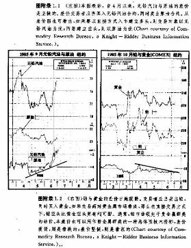
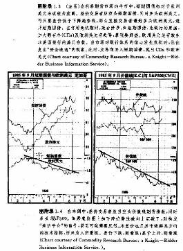
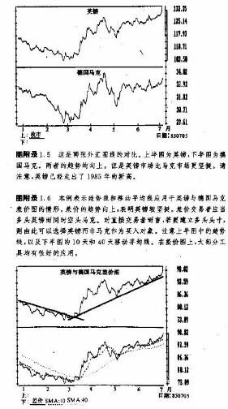
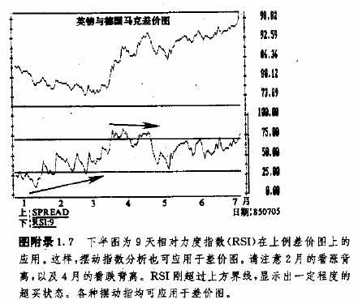
市场之间的相对力度
跟踪不同市场的差价关系，也能够为我们提供关于两个市场的相对的坚挺或疲弱程度的线索。假定交易者对外汇市场看好，那么，通过考察各种外汇市场之间的差价关系，就可以选出最坚挺的市场来开立多头头寸。而在下降趋势中，我们也可以选择最疲软的市场来建立空头头寸。因此，相对力度的概念的内涵比差价交易本身广泛得多。在选择适当的交易市场时，通过差价关系来评测一下各个市场之间的相对力度，对我们是极有帮助的(见图附录1.8)。
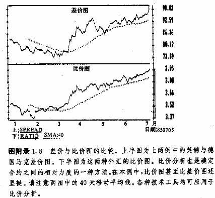
比价分析
在我们测算各种相对力度的时候，比价分析也具有其特别的优越之处。差价，是两种合约价格的实际的差。而比价，则是一种价格除以另一种价格所得的商。不管是在我们比较品内两种月份的合约的时候，还是在对照品间同月份的合约的时候，均可以采用比价的概念。在同一个市场的两种月份的合约之间构造比价，可以鉴别出其中最坚挺或最疲弱的月份。在牛市中，自然应该把多头头寸开立在最坚挺的月份的合约上。而在熊市中，空头头寸则应建立在最疲软的月份的合约上。在我们分析各种市场群类的时候，可以利用比价分析鉴别每个群类中最坚挺或最疲软的市场。如果我们想买进，最坚挺的市场当然是最好的对象。而要卖出，则应当选择最疲弱者。
商品指数之间的相对力度
以上，我们讨论了如何利用相对力度概念在某市场内鉴别其最佳月份的交易合约，或者从给定的商品群类中挑选出最佳的个别市场。现在我们再推广一步，看看如何鉴别最佳的市场群类。我们一直遵循的原则是，最坚挺的合约或市场是开立多头头寸的最好对象，而最疲弱的合约或市场是建立空头头寸的最好对象。交易者也可以利用比价分析，把各个市场群类的指数与广泛性指数(如CRB期货价格指数)比较。由此，我们可以挑出最坚挺的市场群类开立多头头寸，最疲软的市场群类开立空头头寸。
假设交易者认为，CRB期货指数即将上升，那么，研究的结果就是买入方案。通过对CRB指数和各种市场群类的指数进行比价分析，我们可以鉴别出最坚挺的市场群类。那么，在我们的买入计划中，这个市场群类就是最合适的选择对象。然后，我们再在最坚挺的市场群类中的各个具体市场之间，如法炮制，也进行同样的比价分析，得出其中最坚挺的具体市场。最后，我们在这个最坚挺的市场内，比较各个交割月份的合约，以发现其中最坚挺的月份的合约。我们的最终目标就是，在最坚挺的市场群类中找出最坚挺的具体市场，再从这个最坚挺的具体市场中找出最坚挺的月份的合约，把它买进来。而在熊市中，我们的目标就是，在最疲软的市场群类中找出最疲软的具体市场，再从这个最疲软的具体市场中找出最疲软的月份的合约。
股票指数期货与实物股票指数：短期市场气氛的标志
所谓套利，指同时买进和卖出两个实质上相同的对象的交易方式。它与差价交易有些类似，但也有一个重要区别。当上述两个对象出现短暂的价格失调的情形时，套利者会敏捷地捕捉这种机会。他立即买入这个对象，同时卖出另一对象，然后等两者的价格恢复到协调一致的状况时（这正是套利者的合理预期），就可以获利。在股票指数期货市场上，此类交易方式正日益流行。这些期货合约比它所对应的实际股票指数更具有波动性，两者之间时常发生失调的情形。在股票市场处于上涨阶段时，其期货合约的上升进程通常明显地超出它所对应的实物对象。在这种情况下，我们可以采用职业化的套利程序来谋取期货升水的好处。我们卖出其期货合约，开立空头头寸，同时搭配买入具有代表性的一揽子股票(股票组合)，建立相应的多头头寸。而当股票市场处于下降趋势时，其期货合约经常处于贴水的状态。此时，职业套利者就会买入期货合约，同时卖出一揽子股票。
期货合约与其对应的实物指数的差价关系，构成了市场的看涨气氛或看跌气氛的短期技术标志，为人们所密切关注。当期货合约的变化在其实物指数的上方过分超前的时候，表明市场处于短暂的超买状态，可能即将有所回撤。而当期货合约的变化在其实物指数的下方过于偏低时，表明市场处于超卖状态，可能出现技术性的上弹。
参考资料
大部分图表眼务系统中包含一些差价图和比价图，其中有一家公司专门提供差价图表，这便是差价纵览公司。关于这个主题，我们也有些参考书。其一是考特尼·史密斯著的《商品差价:金融、谷物、金属以
及其它商品差价交易的技巧和方法》(约翰，威利父子版，1982年)。其二，《如何从商品的季节性差价中获利：一本大全》，作者是雅各布·伯恩斯坦(约翰·威利父子版1983年)，在第十四章我们已经提到过这本书。另外，在大部分关于商品期货的书籍中，都包含有关于差价交易的部分。
如果朋友们想从事差价交易的话，那么技术分析的知识必定是很有价值的。即使无意从事差价本身的交易，如朋友们对品内各月份的合约的差价关系有所了解，也能对该市场的力度拥有更深刻的洞察力，所以我们应当对之进行跟踪研究。另外，关于此市场与彼市场之间相对力度的情况，在我们进行商品期货市场的直接交易时，也是极有价值的信息。
附录二期权交易
什么是期权?
期权交易也是我们参与期货市场的一种方式。在最近几年中，这种方式越来越风行于世了。所谓商品期权是一种权力，持有者拥有权力，而没有义务，在指定的时间期限内，以指定的价格买入(购人期权，简称买权)或卖出(售出期权，简称卖权)指定的期货合约。期权有两类，卖权和买权。就期权的最基本的应用的来说，如果交易商看好某商品市场，则可以径直地买进相应的期货合约的买权，而不开立该合约的多头头寸。反过来，如果交易商看淡，则可径直地买进相应的期货合约的卖权，而不开立该合约的空头头寸。
为什么不直接买卖期货合约而是买入期权?
买入期货合约的期权与直接买卖期货合约相比，基本的优势在于其有限风险特点。当交易商在期货市场上持有头寸时，需要注入初始保证金。这项保证金通常是他所交易的期货合约价值的5%，数额相当小。然而，如果后来市场的变化不利于交易商的头寸，那么为了保持这个头寸，他或许需要追加更多的保证金。在市场剧烈运动的情况下，交易商的损失可能超过初始保证金的存款额。但是，在期权交易中，交易商只需要支付期权的价格。期权价格由交易所内的交易现场决定。在市场变化出乎交易者意料的不利情况下，他所蒙受的损失的最大值就是期权的价格。而如果交易者如愿以偿的话，他就拥有获取无限利润的潜力(扣除买入期权的价格成本)。
期货合约的头寸与期权头寸的比较
假定交易者看好黄金市场，企图借助期货市场的高杠杆率取得丰厚的利润，那么，他有两种选择——买入其期货合约，或者买入该期货合约的期权。假设他买进了期货合约，在300美元的价格开立了多头头寸。初始保证金需求为2000美元。如果市场涨到400美元，则该交易商有10，000美元的利润($100xl00盎司)。为了便于比较，我们再假定他当初买入的是买入期权(买权)，而非合约本身。他在COMEX场内买入了一张1月份黄金期货的买权，敲定价格(执行价格)是300美元，所付的期权价格是3000美元($30 x 100盎司)。当市场上涨到400美元的时候，他的利润是10，000美元减去3，000美元(期权成本)，净值为7，000美元，而不是前一例中的10,000美元。在这里的情况下，直接的期货交易比期权交易赚取了更多的利润，因为后者必须支付期权的价格。
有限风险的益处
但是，如果金价没有上涨，而是跌到了250美元，情况如何呢?在直接的期货交易中，他在300美元买入，那么，亏损为5，000美元($50X100盎司)。对于大部分交易者来说，或许在亏损达到如此之巨以前已经平仓了结上述多头头寸。不过，这样一来，如果价格后来再度上涨的话，他就没有获利机会了(因为他的多头头寸已经止损平仓了)。从这里可以看出，期权交易具有两大优越性：有限风险和忍峙能力。如果价格确乎下跌，且跌幅持续加深，那么买入期权的持有者可以放弃执行该项买权，他的最大亏损额就是原先的期权价格，3，000美元($30x 100盎司)。对期权的持有者来说，没有追加保证金的问题(正因为买入期权后我们无须顾虑追加保证金，所以以这种方式进行保值交易独具魅力)。
忍峙能力的优越性
期权交易的另一个优势是其忍峙能力。如果我们持有期货合约的多头头寸，有可能中途被迫止损平仓。而持有期权就等于购买了时间。一直到期权到期之前，我们都有机会从价格上涨中获利。如果从现在到期权的到期日还有6个月，那么，只要是在这一期限内，我们均能从价格上涨中得益。持有期权者可以安然地度过价格不利于自己的时候。从而，他就无须始终关注其头寸。这就大大减轻了期货交易的紧张程度。综合起来，持有期权者不但具备事先预知风险和较大的忍峙能力这两个优越性，而且同期货交易者一样，也拥有无限地获利的潜力，以及高杠杆率。
如何把期权交易与直接的期货交易结合起来
大部分商品期权最终都没有被执行。如果由于期权所对应的期货合约的价格变化使之具有了帐面利润，那么我们一般在交易所内把相应的买权或卖权对冲掉，结算净利润。这样一来，期权交易者甚至无须在期货市场上持有头寸。但是，也有的做法是把期货和期权交易结合起来进行的。
1.可以用期权来限制期货头寸的亏损。如果交易者在期货市场上持有多头头寸，则可以同时买入卖权，作为保护性卖出止损措施。
2.可以用期权来作为期货头寸的跟踪止损措施。如果市场的变化正如所愿，从而期货合约获得了帐面利润，我们就可以买入与之反向的期权，作为跟踪止损措施。对于盈利的期货多头头寸，可以买入相应的卖权；而对于盈利的期货空头头寸，则可以买入相应的买权。
3.可以在加码时买入期权，作为扩大盈利的期货头寸的手段。假定我们在期货市场上已经持有了多头头寸，并希望以低风险的方法扩大这笔多头头寸，那么，我们不妨买入相应的买权。如果市场继续上涨，那么除了期权的买入成本之外，我们可以充分地享有每一点利润。如果市场转而向下，那么这笔期权交易的最大亏损也就是它的价格。为了扩大期货市场上盈利的空头头寸，我们可以买入相应的卖权。
诊
什么因素决定期权价格?
期权交易问题是一个极复杂的课题。朋友们在尝试之前，必须充分地学习和准备。在这里的讨论中，我们仅涉及了它的基本概念。交易者应当了解期权交易策略的各种术语，以及决定期权价格的各项因素。期 权价格有两个基本的决定因素，内在价值和时间价值。
所谓内在价值，指期权的已有帐面利润的金额，对买权来说，如果相应的合约的当前价格已经超过了该期权的执行价格，那么它已经含有内生利润了。当然，该期权的买方至少必须支付相当于内生利润的金额。
所谓时间价值与期权的有效期(自买入时起到到期日止)的长短有关。6个月期权的时间价值高于3个月的期权的时间价值。随着到期日的逐渐临近，它的时间价值也相应减少(因此，它又被为“耗散性资产”)。决定期权价格的，还有其它因素，如市场的波动性、利率、以及对期权本身的需求等。对期权本身的需求取决于市场对价格方向的判断。在期货价格上涨期间，买权的价格较高，而卖权价格较低(因为对买权的需求较多)。而在期货价格下跌的时候，卖权价格较贵，而买权价格较低。
技术分析与期权交易
我们这里关心的是技术分析在期货合约的期权交易中的应用这个主题。请朋友们记住，买权或卖权一般被视为期货头寸的替代品。买权与多头头寸相对应，而卖权与空头头寸相当。因此，对于期权交易者来说，也不妨通读本书中的各项技术原理，只要把其中的“多头期货头寸”统统换成“买权”、“空头期货头寸”统统换成“卖权”就大功告成了。在我们稍作上述字句的调整之后，技术分析大抵就能适合期权交易者的口味了。
在我们制定期权交易的策略时，一般也需要对市场有所判断。买入买权的人对市场看涨，买入卖权的人对行情看跌。即使是写期权者(即期权卖方、或期权授予者)，其期权策略也是基于他对相应市场的看法之上的。通常，写期权者在横向延伸的或者稍显疲软的市场上卖出买权。而在中性的或者稍显坚挺的市场上卖出卖权。写期权者向购买期权者收取期权价格。作为报偿，写期权者替买方承担了他的有关风险，拿人钱财，与人消灾。当我们判断市场处于没有明显趋势状态时，或者预期尚不会出现趋势的横向延伸阶段时，卖出期权不失为牟利的一个办法。写期权是个危险的行当，.最好还是让那些市场老手去干。
把技术分析应用于相应的期货市场
期权商在制定期权策略的时候，并不是对期权本身进行各种市场分析。他必须先把技术分析应用于相应的期货市场上。然后，由之形成对市场的判断，并相应地制定和实施看涨的、看跌的或中性的期权交易策略。请记住，期权交易仅仅属于期货市场交易或投资的一种方式。决定期权价值，也即决定对应的期权交易策略的主要因素，还是相应的期货市场的情况。所以，制定期权交易策略的第一个步骤，同时也是最重要的步骤，是对期货市场本身的研究。在这项重大工程中，技术分析是我们首选的武器。而这正是本书的全部内容。
推荐读物
如果朋友们有志于期货市场的期权交易的话，应当研读关于这一课题的参考书。我们推荐《商品期权:投机和保值方法指南》(塔里·S·迈耶著，纽约金融学院版，1983年)，以及《商品期权市场揭秘》(约翰
·W·莱伯兹乌斯基和珍妮·凯恩斯·辛克菲尔德著，约翰·威利父子版，1985年)。
卖权/买权比数作为市场气氛的标志
当期权交易商对市场持看涨态度时，买入买权，而当他看淡市场的时候，买入卖权。如果绝大多数买期权者都看好市场，那么这种倾向就会反映在较高水平的买权交易上。相应地，市场上较大程度地一致看跌的情况，也会反映在较高水平的卖权交易上。在各家金融报纸上，每天都公布卖权和买权的交易量的数字。因此，通过分别追踪卖权和买权交易量的水平，我们就有可能确定期权的购买者们主要是看涨的还是看跌的，及其相对的倾向性正在加强还是在减弱。
技术分析者们开发出了各种卖权/买权比，用来作为市场气氛的指标。最常见的比数是通过交易量构造的。做法是，把卖权的交易数量除以买权的交易数量。如果比数增长，则意味着市场采取看跌的态度(卖
权的购买者比买权的多)。如果比数下降，则表明市场采取看涨态度(买权的买主多于卖权的)。卖权/买权的比数的最有价值之处，是指示市场的极端状态，这与超买/超卖摆动指数的功用类似。因此，它也是一种相反指标。如果其数值极高，则通常构成市场处于底部的信号。而如果其数值极低，则是市场即将出现顶部的警讯。我们也可以从该比数的曲线上揭示它与价格的相互背离现象，用来作为价格趋势即将转折的替示信号(见图附录2.1)。
70年代初以来，股票市场的技术分析者就一直在进行芝加哥期权交易所(CBOE)的期权交易。他们根据期权交易的情况，构造出了许多新的技术指标。目前，各间期货交易所也纷纷推出各类期权新品种，这已经成了80年代的一大景观。期货市场的技术分析者对这一领域如有丰富的经验，毫无疑问，他们也将发现，在期权交易的各类统计数字这块沃土上，也能够绽放出新一代技术分析指标的奇葩。
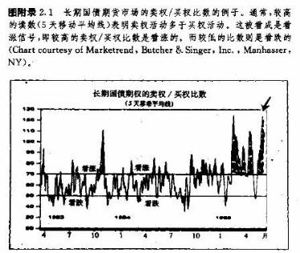
附录三 W.D.江恩：几何角度和百分比例
引言
在本世纪上半叶，威廉·D·(w·D·)江恩(1878-1955)是位传奇式的股票和商品交易巨匠。在50年的职业生涯中，他创立了一套独特的理论，其中把精确的数学理论和几何原理揉合在一起。他利用这一套方法，在交易中取得了很大的成功。在这50年的后一半时间中，他开始为自己的理论著书立说，并四处宣扬。在50年代和60年代，江恩的大部分书均告脱销，而且没有重印，所以当时大家对其理论了解很少。1976年，比利·琼斯，一位小麦农场主和养牛人，从过去江恩的搭挡爱德华·兰伯特手中，买下了兰伯一江恩出版公司。琼斯重印了江恩的大部分原著。在过去的10年中，人们之所以对江恩的理论重新燃起了兴趣，在很大程度上应该归功于琼斯。
江恩的理论极端复杂，且晦涩难懂。江恩理论的分析者们已经花了数年的时间，来潜心研究他在25年里所使用的图表及各类文字，力图破译他的各种思路。江恩的大部分著作是以传统的图表分析概念写成的。他极力强调把历史的高点和低点作为未来阻挡区和支撑区的重要意义。他强调，阻挡水平镇突破后，就演化成支撑水平。反之，支撑水平被突破后就演化为阻挡水平。他也是50%回撤的坚定的信奉者。在他首创的各种概念中，有方阵中心价格和时间均衡法，以及几何角度等。
所谓方阵中心法，是从商品的历史最低价开始，向后数算，推出未来的支撑或阻挡价位的一种方法。起算价格放在方阵的中央，然后依照顺时针方向，在其四周逐步增大。在方阵中，落在中心十字上的数字(通过中心作出的水平直线和垂直线)最有可能成为将来的支撑和阻挡水平(见图附录3.1)。
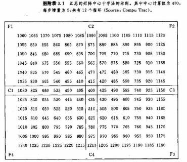
所谓几何形态，是由圆形、三角形和正方形所组成的。这些形态对他的影响最显著。360°的圆周是他的研究方法的显著特点。江恩利用360°的和谐因子，来推算未来市场转折点的时间目标。他是按照日历来推算未来市场的转折点的，具体的做法是，从明显的峰和谷出发，向后数出30天、90天、120天、180天、以及360天。这些日历日期分别标志着市场未来可能发生转折的时间。显要的顶或底一周年后的日期，构成特别重要的时间目标。江恩对与数字7合拍的时间区间也特别推索。
把时间和价格相结合，是他的理论的主要基础。江恩认为，两者之间存在一定的比例关系。在他的推测市场顶和底的方法中，有一种是以价格和时间的均衡为基础的——这就是一单位的价格变化，恰巧对应于一单位的时间过程的情况。举例来说，江恩在图上先选择一个显要的高点，再把其价格的美元数值转换成日历时间单位(天数、周数、月数、或年数)，最后，以该时间单位向未来投射，得出与此高点的距离等于上述时间单位的点。于是在这一点上，时间和价格将处于均衡状态，应当出现市场的转折点。下面我们用数字作一个具体的说明。如果市场的显著高点为100美元，那么江恩就从此点开始，向未来数算100天、100星期、100月、或100年。在这些日期上，可能出现市场转折点。江恩的时间和价格的比例关系，是他的几何角度理论的基础。而后者是我们这里要讨论的主题。
几何角度和百分比例
我们的目的是要介绍江恩理论中较简单的儿何角度方法。在一些出色的江恩理论家看来，这是其中最有价值的一种技术。另外，我们还打算谈谈他的另一个相对简单的概念——百分比回撤，而这又可以有效地与几何角度线协同起来使用。
我们先从江恩的百分比例入手。在第四章讲述百分比回撤的时候，曾提到江恩把价格运动划分为八等份：1/8、2/8、3/8、4/8、5/8、6/8、7/8、8/8。他也把价格运动分成三等份：1和2/3。在下表中，我们把上述分数换算成百分数。请注意，1/3和2/3已经被安插在八等份数列中的适当位置上了。
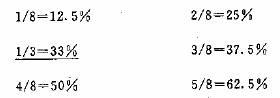
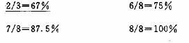
朋友们马上会注意到，中间的五个数字——33%、37.5%、50%、62.5%和67%——非常面熟。对江恩来说，其中50%是最重要的。而这个数字在各种百分比回撤中，也是最赫赫有名的。从50%向外扩展，以下的两个数字是37.5%和62..5%，其重要性仅次于50%，这与我们在第十三章中讨论的菲波纳奇回撤如出一辙。由此，我们就把江恩理论与艾略特波浪理论合二而一了。等而下之，是33%和67%，这是我们在第四章所讲的道氏理论的最小和最大回撤的位置。
江恩认为，其它百分比数字在市场变化中也有所体现，但都不太重要。在江恩扇形中，也以75%和87.5%作为市场转折点的警示点。而对于较小幅度的回撤来说，12.5%和25%也许也起到一定的作用。无论如何，虽然后头这四个数字超出了33%和67%的界限，但一般仍为大部分市场技术分析者所用。
江恩的几何角度是从市场的显要的顶或底出发、按照一定的角度引出的一组趋势线。这些角度由价格与时间的相互关系所决定。其中最重要的角度是45°。在上升趋势中，江恩从市场的底部向右上方引出
45°倾角的直线。而在下降趋势中，从市场顶部向右下方引出45°倾角的直线〔与我们在第十二章中讲过的变通点数图的45°直线类似)。作这条直线的根据是，沿着这条直线，时间变化和价格变化的关系正好处于1比1的均衡状态。换言之，在每个时间单位内(在日线图上通常为一周)，价格上涨或下跌的幅度亦为一单位(或者是图上的一格)。其作法是，在日线图上，先找出底点，然后，沿时间轴向右移一格(一周)，再沿价格轴向上移一格，得到第二个点，最后把两点联结起来并向右上方延长，就是45°直线了。我们也可以借助量角器来画线。
45°线的重要性
45°线代表江恩的主要的上升或下降趋势线。在牛市中，只要价格维持于上升45°线的上侧，则牛市持续有效。而在熊市中，只要价格维持在下降45°。线的下侧，则熊市持续有效。市场对45°线的突破，通常构成主要的趋势反转信号。我们可以看出，在45°线上，价格与时间正好处于完美的均衡状态中。在上升趋势中，当价格跌回上升45°线时，时间和价格的关系恢复均衡状态。因此，如果这条趋势线被跌破了，就表明上述关系被打破了，趋势可能发生变故。我们也可以照45°画出其管道线。它从显著高点或低点出发，平行于基本的趋势线。
我们通过因子2来组合时间和价格的比例关系，可以作出更陡峭的或更平缓的几何趋势线。lXl线就是45°线。1X2线则是下一个更陡峭的线，居于45°线的上方，表示在每一时间单位内，价格增长2个单位。这就意味着价格上升的速度是时间变化速度的2倍。再下一个更陡峭的直线是1X4线，表示在一个时间单位内，价格上升4个单位。这一组陡峭直线可以依次类推，直到1X8线，不过后面这种陡峭直线已不常用(见图附录3.2)。
在45°线的下方，下一个更平缓的直线是2X1线，表示在两个时间单位内，价格上升一个单位(或者说每周上升1价格单位)。再下一个更平缓的直线为4X1线，表示在四个时间单位内，价格上升一个单位(或者说每周上升1/4价格单位)。下表按照由陡而平的顺序，列出了各种几何角度线以及与之对应的角度值。前一个数字代表时间，后一个数字代表价格，念作时间X价格：
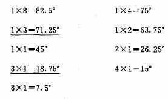
请注意，在上表中也包括进了1 X3和3X1两条直线。江恩显然已经意识到，这两条特别的直线把价格运动三等分，因此在周线图和月线图上更有用途。江恩的几何直线的使用方式，与速度线和菲波纳奇扇形线颇为相似。在上升趋势中，它们是支撑线；而在下降趋势中，它们是阻挡线。在上升趋势中，价格跌破其中一条直线，就意味着将跌向下一条直线。相应地，在下降趋势中，涨破其中一条直线，就意味着将涨向上一条直线。
把几何角度线与百分比回撤结合起来
这两种技术相辅相成、相得益彰。一旦市场发生重要运动后，我们就可以把价格变化的幅度划成八等份，再沿着相应的八等份回撤点，标出各条水平直线。在上升趋势中，这些直线在价格回落时起支撑作用。而在下降趋势中，它们起阻挡作用。通过这些标志线，我们预先就可以知道何处为重要的百分比回撤的位置，虽然江恩总共采用了八个数字，但其中最重要的位置仅仅在3/8、4/8、5/8 三者上下。它们包含了50%
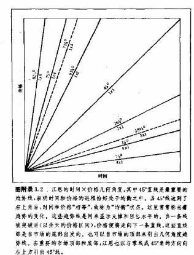
回撤和2个菲波纳奇数字。其余参数的重要性稍为逊色一些，但我们至少也应当了解它们的位置。
下一步，我们从显要的高点、或低点，或者同时从两者出发，作出江恩的几何角度线。其中最重要的三条角度线是45°线(1X1)、63.75°线(1X2)，以及26.25°线(2 Xl)。这三条线与中间的三条回撤线(37.5%、50%和62.5%)一起，界定了图表上的重点区域。我们也可以作出其它的角度线(更陡的也好，更平的也罢)，但其重要性不大。
然后，我们寻找两种技术的相互吻合或验证之处。最好的例子是，上升趋势的50%回撒正好达到了
45°线上。这里是绝好的支撑区。另一个例子是，上升趋势的37.5%的菲波纳奇回撤正好抵达63.75°线(lX2)。这里的情况是，价格同时达到了显要的几何角度线和重要的百分比回撤点。
江恩的几何角度线必须从显要的峰和谷出发。因此，在一张图上，可能同时出现上升和下降两组直线。这两组直线也可以结合起来使用。当下降的角度线(画自顶点)与上升的角度线(画自底点)成90°相交时，其交点具有更重要的份量如果这个交点还与水平的百分比回撤线吻合的话，那么其意义甚至更重要。江恩除了自显著的顶点和底点出发作几何角度线外，也热衷于从坐标原点O出发作45°线。换句话说，在他的图表上，不仅从显著的顶点或底点出发作45°线，而且也从对应于原点的价格点出发作45°线。江恩认为，自原点作出的直线在未来也有意义。他还有很多作直线的方式，不过我们的讨论仅限于上述范围。
这里我们附了一些图例，展示了这些几何直线和角度的实际应用的情形。不过，为了简明起见，这些例子都集中在较重要的直线和角度上(见图附录3.3到3.7)
参考资料
我们这里主要介绍了江恩的几种较简单也较有用的技巧。朋友们可以从其它资料中一窥江恩思想的全貌。其中最好的读物来自兰伯特一江恩出版公司。它出版了好几本江恩的著作，其中包括最著名的《如何在商品市场获利》(初稿于1942年，重订于1951年，1976年重印)。它还推出了两门课程“W .D.江恩股票市场教程”，和“W，D·江恩商品市场教程”。另外，兰伯特一江恩出版公司还发表一份市场通讯，《W·D·江恩技术评论》：偶尔举办一些关于江恩技术的讲座；甚至还出售最适合这类分析的图表纸。
有些市场通讯专门从事江恩分析，其中最著名的是《江恩的角度》，作者为菲利斯·卡恩。另一份是《精确的时机抉择》，作者是唐纳德.R.沃都皮克。后者以其独到的方式把江恩分析与艾略特波浪理论结合起来加以应用。沃都皮克先生在其《利用精确的时机抉择法获利》(精确时机公司版，1984年)中，介绍了他的这门技术。其主要方法是，把艾略特波浪分析与江恩的角度线，特别是主要的几个江恩角度线—1Xl、1X2和2X1，结合起来。
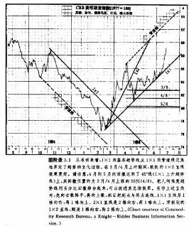
江恩信奉者也有计算机软件作辅助工具。兰伯一江恩出版公司推出了“江恩交易者1号”(1983年，版权为皮特.皮克所有)，是最有雄心的程序，其中包含了江恩的一些较深奥的技术，如“专业时间和价格计算器”。帕多公司推出了“高级图表师甘技术分析软件，能够在图表上做出江恩角度线和江恩回撤线。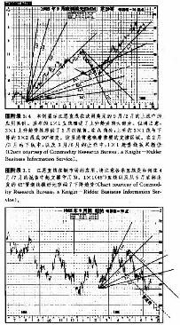
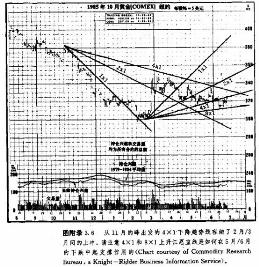
Compu Trac提供江恩的方阵中心十字的计算程序(见图附录3.1)，并给出了作出几何角度线所需的各种数字。
堪萨斯市期货交易所为喜欢自己动手的朋友提供了一种透明的塑料手工用具，称为“机会角度”，可用来描画江恩角度线。
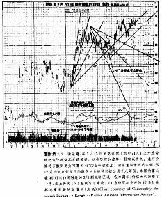
关于本书
本书系美国市场技术分析家JOHN.J.MURPHY(约翰.墨菲)的技术分析名奢"Technical Analysis Of the Futures Markets” (纽约金触学院1986年)的中文译本。原书自1986年间世以来，在美国等西方各个主要国家和地区，备受期、现货(能源、农林牧产品、金属、贵金属等各大类)、股票、外汇、利率(债券)等行业的管理人员、操作人员和研究人员的青睐(因为期货市场对技术分析的要求最高，而技术分析本身在各行各业并无实质差别)，被誉为当代市场技术分析的圣经。本书集各种市场技术分析理论和方法之大成，一身兼有优秀教材、权威工具书、实用操作指南三大特色.
本书自始至终从实际操作出发，很少繁复的理论，总是一针见血地指出各种方法在实际应用中的长处、短处以及在各种环境条件下把它们取长补短地配合使用的具体做法.本书图文并茂，其中的.图例典型、生动，获盖了金融、股票、能溉、农林牧产品、金属、贵金属等各个市场，并在全书中占有相当篇幅，从而大大地便于学习和体会。
.作者约翰·墨菲是美国顶尖的儿位著名市场技术分析家之一，有二十多年的分析经验。曾任美林证券公司分析研究主任，商品研究局的高级技术分析编辑，市场技术分析家协会的理事，纽约金触学院的教授。《华尔街日报》、《期货》杂志等经常引述和发表他的观点。目前他与人搭档，主持“华尔街一周”电视专栏，并且作为CNBC电视台的特邀技术分析专家，主持每日的金融市场分析节目，纽约时间1，10、3，1},5x2}均有播出。
他本人也有一家咨询公司，定期发表《期货市场趋势及市场交叉分析》，提供关于金融期货、金属、石油、股票指数期货以及CRB期货价格指数的技术分析报告。
因为他对全球市场技术分析事业的杰出贡献}19}年1}月.在世界市场技术分析家联盟的第五届大会上，荣获了该联盟的首届年度大奖。
译者丁圣元，19}年从北京大学硕士毕业.之后在北京一家金胜机构从事外汇交易及分析工作.1年起，在《经济日报》国际版锌有“外汇走势参考”专栏，每周一刊行.其中主要以技术分析方法对国际汇市作出预测，准确性较高，并为《香港经济日报》等海外报刊所引用.
本书的中文翻译语言平易、流杨、准确。“
原著的版权人曾对本译稿以及其他几份译稿的前几章(要求白译该书的人较多，他们分别来自大陆，香港和台湾等地)进行了比较，结果本译稿中选。原版权人将同时在台湾出版本译稿的策体字版本.
如果朋友们购书有困难，或者对本书有任何批评建议，或者有任何疑问等，欢迎与译者丁圣元联系，我们将尽力给予满意的答复.联系办法是:北京市海淀区民族学院南路9号地展出版社张奈山先生收转丁圣元，邮政编码是******.